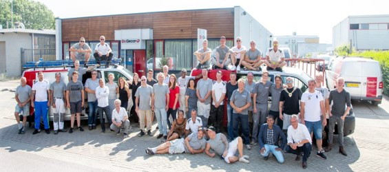
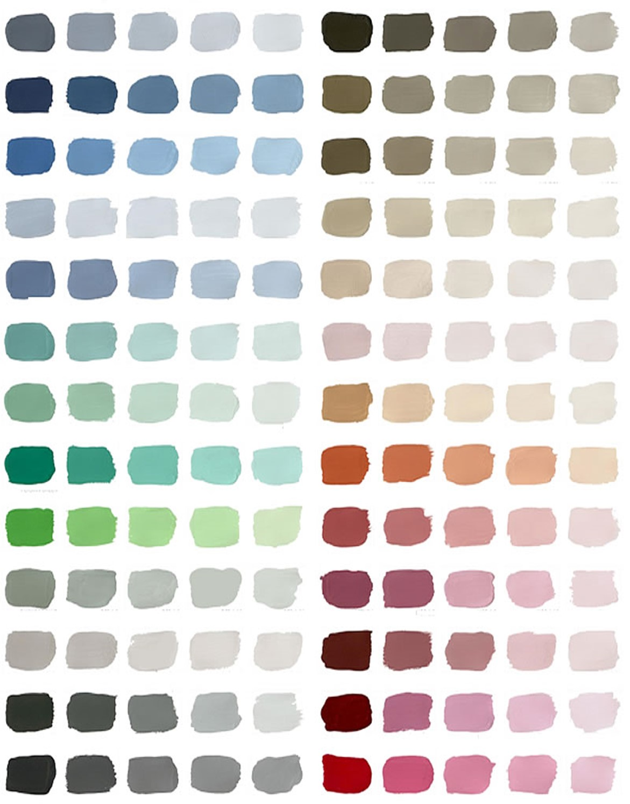

MurenMode VAKSCHILDERS

onze zeer gespecialiseerde collega's
Bent u op zoek naar een betrouwbaar schildersbedrijf
dat vakmanschap en kwaliteit hoog in het vaandel heeft
staan? Zoek niet verder! Bij MurenMode streven we
ernaar om uw visie tot leven te brengen door middel
van verf en kleur. Met jarenlange ervaring,
toewijding en oog voor detail zijn wij dé experts in
schilderwerk voor zowel residentiële als commerciële
projecten.Betrokken Vakmanschap: Onze schilders zijn
gepassioneerd over hun vak en streven naar uitmuntendheid
bij elk project. We nemen de tijd om uw wensen te
begrijpen en leveren nauwkeurig werk met oog voor detail.
We gebruiken alleen de beste verf en
materialen om duurzame en aantrekkelijke resultaten te
garanderen. U kunt erop vertrouwen dat uw investering in
ons schilderwerk de tand des tijds zal doorstaan.
Email: murenmodevakschilders@benelux.com
Telefoonnummer: 06 40830403
Locatie: zie afspraak maken

onze uitgebreidekleurenkeuze